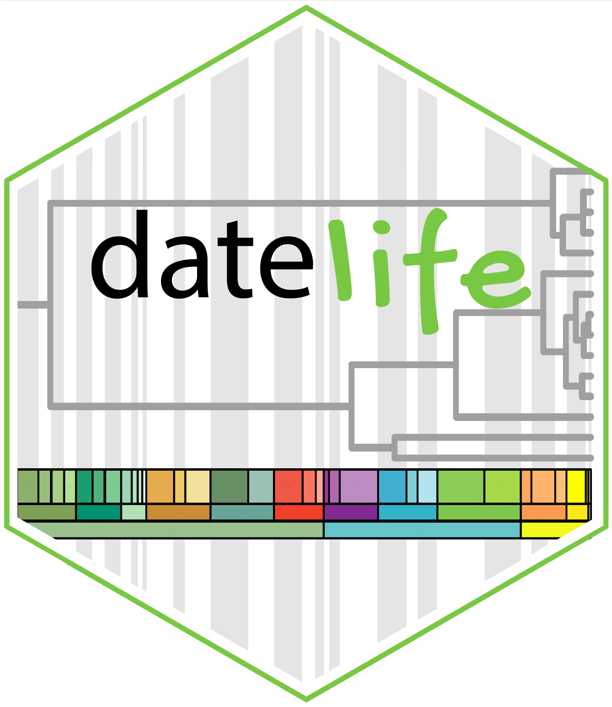

Get a phylogenetic tree with branch lengths proportional to geologic time (aka a chronogram) of any two or more lineages of interest to you.
Use the datelife R package locally, or through DateLife’s website to search for chronograms available for your lineages of interest in Open Tree of Life’s tree store.
You can also date a phylogenetic tree of your own making (or choosing one from the literature), using node ages from chronograms found with datelife as secondary calibrations.
datelife has been developed as part of the phylotastic (NSF-funded) project, and is still under development.
1. Installation
datelife’s stable version 0.6.0 is available for installation from CRAN with:
install.packages("datelife")You can install datelife’s development versions from the GitHub repository with:
devtools::install_github("phylotastic/datelife")2. Citation
If you use datelife for a publication, please cite the R package and the accompanying paper:
O’Meara B, Sanchez-Reyes L, Eastman J, Heath T, Wright A, Schliep K, Chamberlain S, Midford P, Harmon L, Brown J, Pennell M, Alfaro M (2022). datelife: Scientific Data on Time of Lineage Divergence for Your Taxa. R package version 0.6.1, https://doi.org/10.5281/zenodo.593938.
Sanchez-Reyes L, O’Meara B (2019). “datelife: Leveraging databases and analytical tools to reveal the dated Tree of Life.” bioRxiv, 782094. https://doi.org/10.1101/782094.
You can get these citations and the bibtex entry with:
“.bibtex” files are also available.
3. Feedback and Information for Developers
We welcome and encourage to post a GitHub issue with any comments, ideas and questions about datelife’s software and website. If you want to contribute with code directly, we welcome and encourage pull requests.
Function documentation:
Package and function documentation was generated with roxygen2:
roxygen2::roxygenise()Calculating test coverage:
Code coverage was calculated with the package covr:
cov <- covr::package_coverage()
usethis::use_data(cov, overwrite = TRUE)You can see an interactive report of testing coverage:
covr::report(cov)And, find code with zero coverage:
covr::zero_coverage(cov)Generating datelife’s hexsticker:
Code used to generate current datelife’s logo hexsticker is in data-raw/hexsticker-current.R
Rendering the vignettes:
Vignettes are rendered automatically upon built. However, if you wish to see how they look rendered before releasing the package, you can do this with knitr::knit(). The following command renders the vignette Getting_started_with_datelife as html:
knitr::knit("vignettes/Getting_started_with_datelife.Rmd")Creating a webiste for the package
Using pkgdown for this is quite straightforward and fun:
usethis::use_pkgdown()
pkgdown::build_site()Releasing to CRAN
Local checks
To be able to release to CRAN, the first step is to pass the checks locally. To run a local check, you can use the command R CMD check from your terminal. For that, change directories to the one above your working clone of the datelife repo:
cd ../Generate a tar ball for your package by running R CMD build package-name:
R CMD build datelifeFinally, run R CMD check package-tar-ball on the tar ball that you just generated:
R CMD check --as-cran datelife_0.6.0.tar.gzRemote checks
If you do not have access to different OS to test your package on, the rhub package allows remote testing on a variety of OS with the command:
rhub::check_for_cran()To submit to CRAN call devtools::release() and answer the prompted questions. If the answer to all of these is yes, the package will be submitted to CRAN 🚀